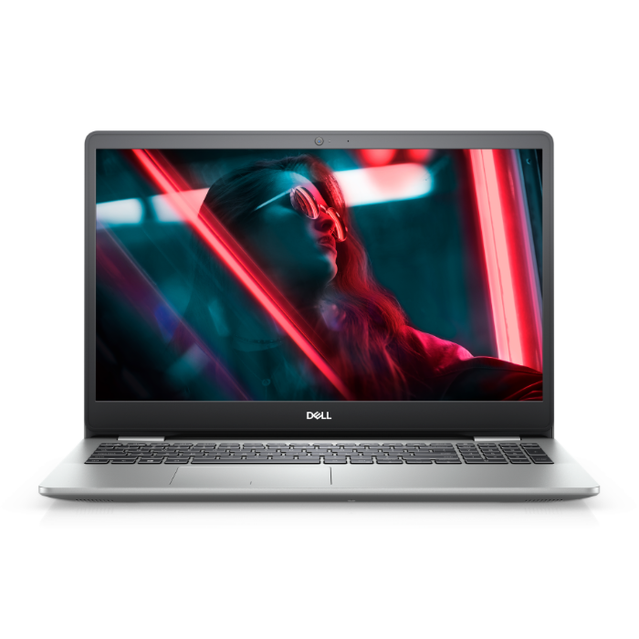

Notebook Dell Inspiron 5402 Core I5 1135g7 Memoria 8gb Ddr4 Ssd 256gb Tela 14' Fhd Windows 10 Home
R$ 4.554,30
Cartão de crédito - 10x455,43
Notebook Dell Inspiron 5402 Core I5 1135g7Portabilidade perfeita.Bateria aprimorada: Minimize o tempo gasto
carregando o dispositivo na tomada e maximize seu estilo de vida em movimento com o ExpressCharge, que
recarrega a bateria rapidamente (até 80% em 60 minutos).

Magic Mouse – Superfície Multi-Touch branca
R$ 810,00
Cartão de crédito - 12x67,50
O Magic Mouse é recarregável, sem fio e tem uma base com design otimizado para ser movimentada suavemente
pela mesa. Com a superfície Multi-Touch, você navega em documentos e entre páginas da internet fazendo
gestos simples.
A bateria recarregável do Magic Mouse dura muito: um mês ou mais entre recargas. Ele já vem pronto para usar
e é emparelhado automaticamente com o Mac. Acompanha o mouse um cabo USB-C para Lightning em tecido que
emparelha e recarrega pela porta USB-C do computador.

Monitor Samsung 24' LED, Curvo, Wide, Full HD, HDMI/DisplayPort, VESA, Ajuste de Ângulo, FreeSync -
LC24F390FHLMZD
R$ 1.099,90
Cartão de crédito - 10x de R$ 122,21
Tela curva para uma experiência de visualização mais envolvente:
Englobando todo o seu campo de visão como sua tela de cinema iMax local, a tela 1800 R - com seu raio de
1800 mm de arco para maior curvatura - cria um campo de visão mais amplo melhora a percepção de profundidade
e minimiza distrações periféricas para que você mergulhe ainda mais no conteúdo. Então, seja um filme
on-line, seu programa favorito ou um jogo de corrida, a ampla curva de tela Samsung pode mergulhar você em
todo o seu conteúdo multimídia.